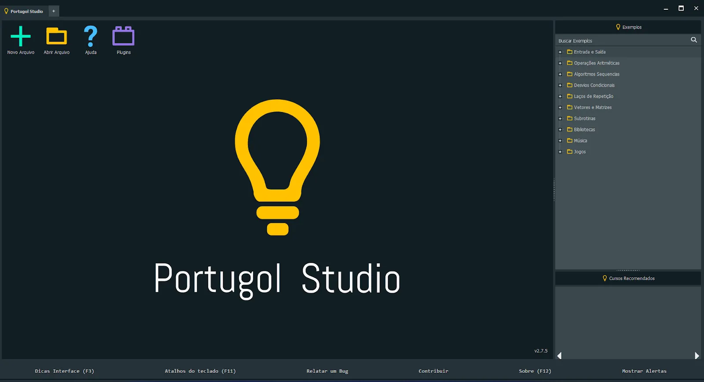
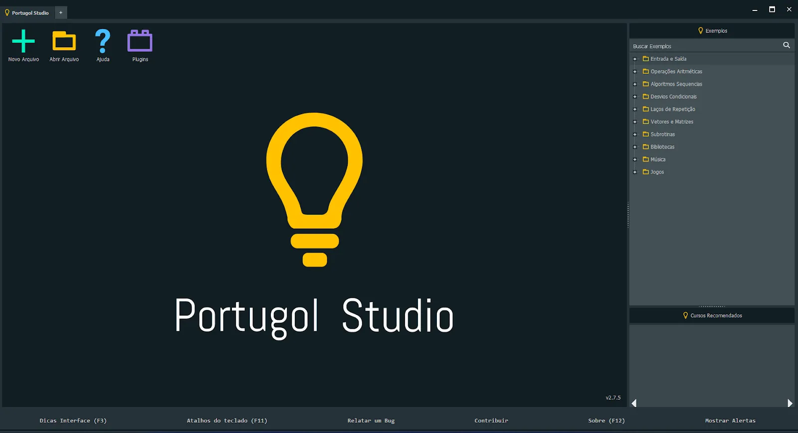

Fluxograma
Um fluxograma é uma representação gráfica de um processo ou algoritmo, feita com figuras geométricas padronizadas conectadas por setas que indicam a sequência de execução. As formas mais comuns incluem: um símbolo de “início/fim”, símbolos para entrada de dados, para processamento (atribuição ou cálculo), para saída de dados, para decisões (testes lógicos) e conexores de fluxo. A vantagem de usar fluxogramas é tornar visual — e, portanto mais intuitivo — o funcionamento de um algoritmo, facilitando o entendimento mesmo antes de codificar.
Algoritmos

Um algoritmo é uma sequência finita de passos bem definidos e ordenados, desenhada para resolver um problema ou executar uma tarefa. Sua utilidade aparece sempre que precisamos definir claramente como um sistema ou programa deve operar — desde cálculos simples até lógicas complexas de decisão, manipulação de dados, automação, etc. Na computação, os algoritmos são a base de todo programa: antes de codificar, definimos os passos; depois, transformamos esse algoritmo em código.

Portugol
O Portugol (ou português estruturado / pseudocódigo) é uma forma de escrever algoritmos usando sintaxe mais próxima do português, com o objetivo de facilitar o aprendizado da lógica de programação sem a complexidade sintática de linguagens “reais”. O Portugol Studio é uma ferramenta/ambiente de desenvolvimento voltada para esse público — ele permite digitar, interpretar e executar programas escritos em Portugol de forma simples e acessível. A ideia é democratizar a entrada no mundo da programação, eliminando a barreira do idioma e da sintaxe complexa, especialmente para quem está iniciando.
 


Variáveis e constantes
Variáveis e constantes são conceitos centrais em programação: uma variável representa uma “caixa” de memória cujo valor pode ser alterado ao longo da execução de um algoritmo; já uma constante representa um valor fixo que não se modifica. Em Portugol, ao declarar variáveis, definimos seu nome e tipo — por exemplo inteiro, real, cadeia, lógico, etc. O uso de variáveis e constantes permite ao algoritmo armazenar dados temporários (entrada do usuário, resultados intermediários, contadores, etc), garantindo flexibilidade e reutilização.


Tipos de dados mais usados
Nos algoritmos escritos em Portugol, os tipos de dados mais usados são: inteiro (números sem parte decimal), real (números com parte decimal), cadeia ou caracter/texto (para representar sequências de caracteres — similar a string), lógico (booleano: verdadeiro/falso) e também estruturas como vetor para coleções de valores. Esses tipos permitem ao algoritmo lidar com diferentes naturezas de dados — números, textos, valores lógicos — oferecendo flexibilidade para representar diversos tipos de informação.


Programas em Portugol usando Funções


Programas em Portugol usando Vetores